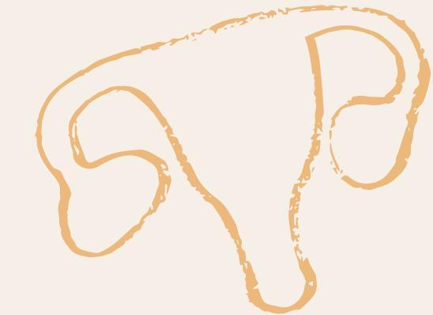
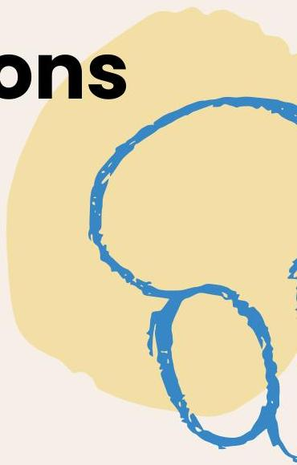
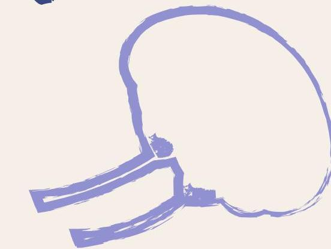
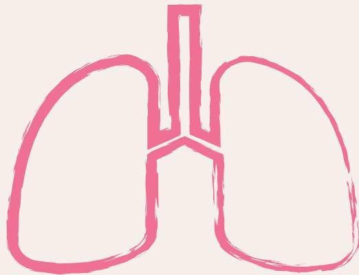

🔬
Topic 03
Cancer Detection Examinations

01
Cytologic Examinations
Papanicolaou Test (Pap Smear)
Cytologic specimens can be obtained from tumors that tend to shed cells from their surface. Methods of collection include:
- GI Tract: Endoscopy
- GU Tract: Colposcopy (cervix/vagina), Cystoscopy (bladder)
- Body Cavities: Laparoscopy (pelvic/abdominal cavity)

Fig 3.1: Endoscopic examination procedure
Pap Smear Classifications
| Class | Interpretation | Recommendation |
|---|---|---|
| Class I | Normal | Follow-up examination every 1-3 years |
| Class II | Inflammation | May require Pap exam in 3-6 mos |
| Class III | Mild to moderate dysplasia | Further evaluation required |
| Class IV | Probably malignant | Require biopsy |
| Class V | Possibly malignant | Immediate intervention |
02
Biopsy
Involves obtaining tissue samples by needle aspiration or incision of tumor for definitive diagnosis.

Fig 3.2: Biopsy procedure types
Needle Biopsy
Done by aspiration of tumor cells with needle and syringe.
Excision Biopsy
Done by removing the entire tumor (typically for small tumors).
Incision (Subtotal) Biopsy
Done by taking only a part of the tumor (typically for large tumors).
03
Radiologic Examinations
- Ultrasound (UTZ)
- Magnetic Resonance Imaging (MRI)
- Radiodiagnostic tests
- Computerized Axial Tomography (CT scan)
- Endoscopic examinations

04
Laboratory Tests
1. Hematologic (CBC)
- Hemoglobin (Hgb) & Hematocrit (Hct)
- Low in anemia, may indicate malignancy.
- Leukocytes (WBC)
-
- Immature WBCs: High in leukemia, lymphomas.
- Mature WBCs: Low in leukemia and metastatic disease in bone marrow.
- Platelets
-
- High: Chronic Myelocytic Leukemia (CML), Hodgkin’s disease.
- Low: Acute Lymphocytic Leukemia (ALL), Acute Myelocytic Leukemia (AML), multiple myeloma, bone marrow depression.
2. Tumor Markers
Substances produced by cancer cells or by other cells of the body in response to cancer.
| Marker | Elevated In / Associated With |
|---|---|
| Alpha-fetoprotein (AFP) | Lung, testicular, pancreatic, colon, gastric CAs, and choriocarcinoma |
| Carcinoembryonic Antigen (CEA) | Colorectal, breast, lung, stomach, pancreatic, and prostate CAs |
| Human Chorionic Gonadotropin (HCG) | Choriocarcinoma, germ cell, testicular CA |
| Prostatic Acid Phosphatase | Metastatic prostate CA |
| Prostatic-Specific Antigen (PSA) | Prostate CA |
Knowledge Check
Test Your Understanding
Complete this quiz to assess your comprehension of Diagnostic Examinations.
Loading quiz...